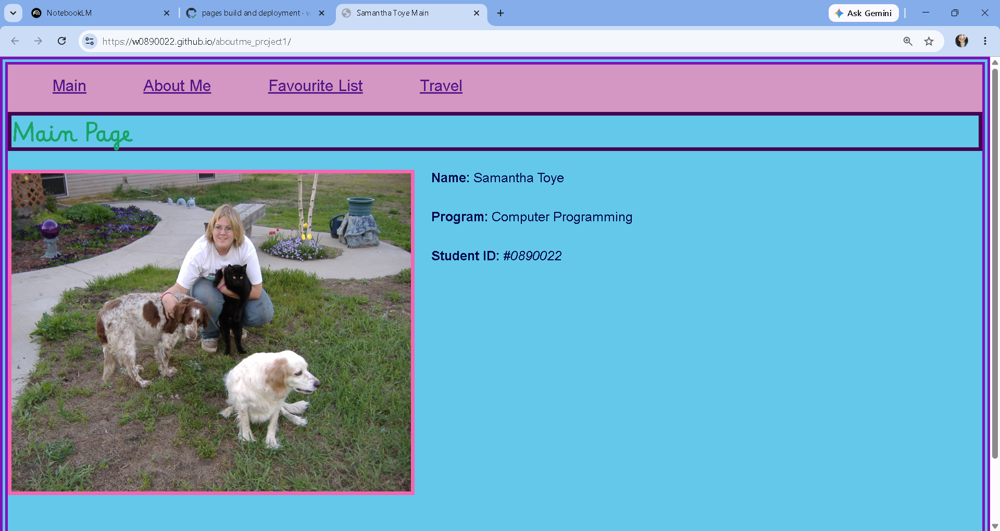
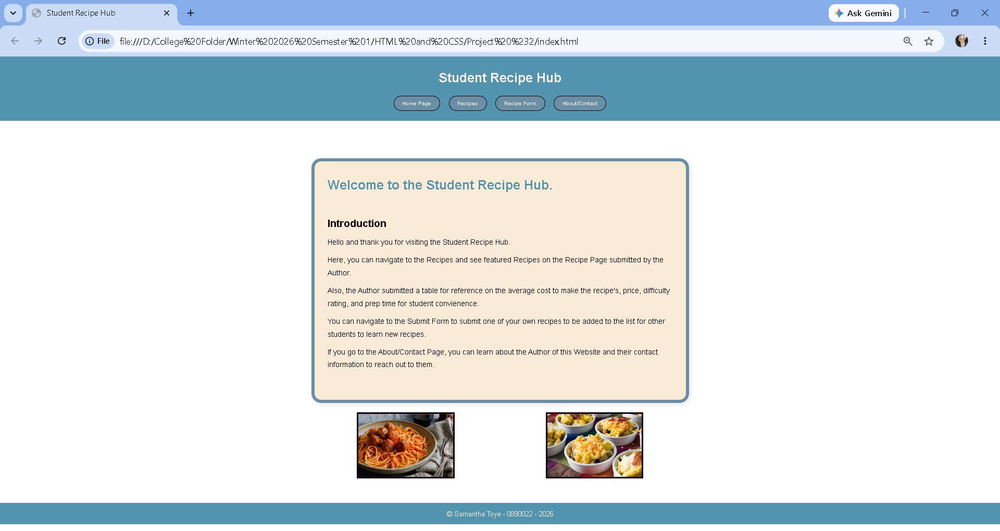
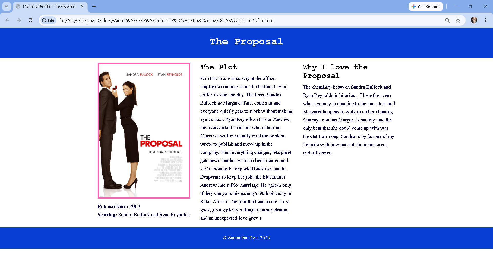
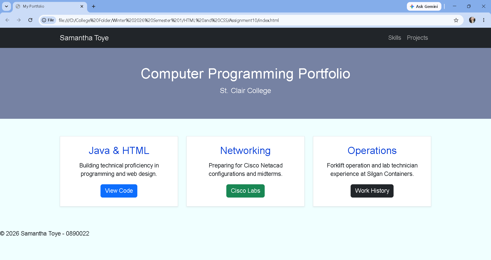

Academic Projects

Task Manager
An interactive web application demonstrating client-side scripting logic. Built utilizing procedural JavaScript arrays and objects to dynamically insert, render, filter, and prioritize scholastic and workplace assignments within a semantic HTML document structure.

Color Mixer
A dynamic frontend utility that leverages real-time JavaScript DOM manipulation. Translates data inputs from interactive HTML RGB range sliders into synchronized functional hexadecimals, updating the background style layout container instantaneously.

Project #1 About Me - HTML/CSS
A multi-page responsive personal directory highlighting early frontend styling foundations. Showcases semantic layout architecture, localized file structures, custom external CSS style rule sheets, and media query breakpoint formatting to ensure cross-device consistency.

Student Recipe Hub - Project #2 HTML/CSS
A multi-page web directory featuring a semantic header navigation menu linking to dynamic data reference tables, user submission forms, and structured content containers. Showcases organized site hierarchies, layout wrapper blocks, and optimized fluid multi-image rendering classes.

Favorite Film - Assignment #9 HTML/CSS
A responsive media page built with structural HTML and external CSS. Showcases advanced multi-column layout wrapper divisions and responsive fluid imaging using element configurations like srcset and sizes properties.

Portfolio - Assignment #10 HTML/CSS
An early portfolio architectural prototype structured utilizing the Bootstrap CSS framework grid system. Features multi-column alignment rows, uniform shadow-sm card groupings, a responsive fixed navigation bar element, and integrated custom hero sections.